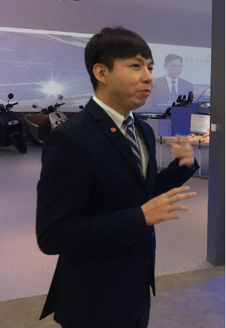
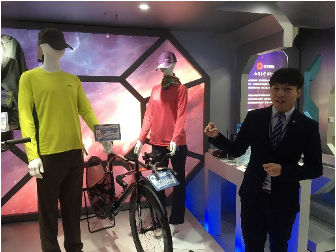
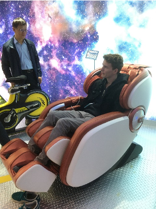

Nestled in the bustling Nangang District of Taipei City, the Taiwan Excellence Exhibition stands as a testament to Taiwan's relentless pursuit of innovation. This initiative, spearheaded by the Taiwan Ministry of Economic Affairs, is more than just a showcase; it's a vibrant platform where technology meets creativity, pushing the boundaries of what's possible. My recent visit to this exhibition, which is open to all during weekdays with no admission fee, was not just enlightening but also incredibly inspiring. Let me take you through a day of discovery at the heart of Taiwan's innovative spirit.
Welcomed with Warmth
The moment I stepped into the exhibition, two friendly staff members greeted me. Their humility and clarity in explaining the exhibits immediately set a positive tone for my visit. This place wasn’t just about showcasing products; it was about sharing stories of innovation and the hard work behind them.

A Spectrum of Innovation
The exhibition is a melting pot of advancements across five key sectors:
- ICT Trends
- Sports and Leisure
- Biotech and Medical
- Smart Living
- Green Tech
Each sector, represented by leading Taiwanese companies, has undergone a meticulous selection process, ensuring that only the finest innovations make it to the exhibition floor.
Pedal to the Metal

Among the first innovations to catch my eye were two bicycles from Merida and Giant, brands that have carved a niche for themselves in the global biking community. These weren't just any bikes; they were masterpieces of engineering, designed for performance and comfort. With options like the 'race' and 'relax' handlebars, they cater to every cyclist’s need, highlighting a future where design and utility go hand in hand.
On a Roll with Gogoro
Taiwan's electric scooter scene is abuzz, thanks to Gogoro. With its powerful lineup and a scooter rental service accessible via an app, Gogoro is revolutionizing urban mobility. It's a brilliant example of how industrial design is evolving to meet the demands of today's digital era.
Innovation Beyond Gadgets
The exhibition also spotlighted innovations in biotech and medical, smart living, and more, featuring everything from high-tech rice cookers and tea brewers to smart refrigerators. It's fascinating to see how these innovations are making everyday life simpler and more enjoyable.
Witnessing ICT Wonders
Brands like Asus and Acer, along with other homegrown ICT giants, were there to showcase their latest creations. Their products, some making their market debut, were a clear indicator of Taiwan's thriving tech scene and its potential to surprise and delight.
Designing with Empathy
A crucial takeaway from the exhibition was the focus on inclusive design, particularly for the elderly. With Taiwan's aging population, products like the showcased foldable wheelchair underline the importance of innovation that caters to all, enhancing the quality of life across generations.

In Essence
The Taiwan Excellence Exhibition is more than just a display of technological prowess; it's a celebration of how far Taiwan has come as a beacon of innovation. The government's partnership with local companies serves as a powerful catalyst for progress, cementing Taiwan's place on the global technology map.
This journey through the exhibition was a revelation of how innovation, empathy, and sustainability can come together to create a future that's exciting and inclusive. As Taiwan continues to innovate, the world watches and learns.